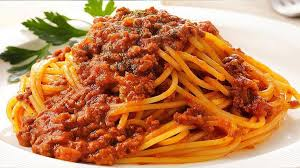

Bolognese Pasta

This is the amazing Bolognese Pasta, hand crafted by the master chef Gordon Ramsey.
Ingredients:
- Ground Beef
- Spaghetti
- Thyme
- Sugar
- Tomato
- Bay Leaves
- Onion
- Garlic
Recipe:
Steps on How to Make the Bolognese Sauce:
- Saute garlic and onion (about 3 minutes)
- Brown the beef (about 2 minutes)
- Add the sugar, thyme, tomato, and bay leaves. Give it a good stir then simmer for 20 minutes minimum
Steps on How to Make the Spaghetti:
- Put a large pot with water to boil
- Add the Spaghetti and let it cook (about 10 minutes depending on the spaghtetti)